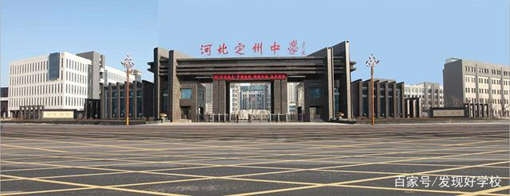

1.名字的寓意:璇字是美玉的意思。
2.我的家乡:河北定州
定州市是中华人民共和国河北省直接管辖的县级市，享有副地级市待遇。位于保定市和石家庄市之间，北纬38°14ˊ至38°40ˊ，东经114°48ˊ至115°15ˊ之间，太行山东麓，华北平原西缘。定州市是华北地区重要交通枢纽。自古就有“九州咽喉地，神京扼要区”之称。定州瓷器玉器历史悠久。定州的定州贡院是我国北方唯一保存较为完整的封建社会选拔秀才和贡生的考场。
定州市位于京津冀经济区，是京津冀经济区重要节点城市，国家新型城镇化综合试点地区，河北省十二五规划重点培育的现代化中等城市，河北省十大历史文化名城之一。
3.我的高中母校:河北定州中学
我的母校是全国百强中学，全国文明单位，多所高校优秀生源基地，河北省示范性高中,建校于1902年，以“厚德笃学创新自强”为校训。
